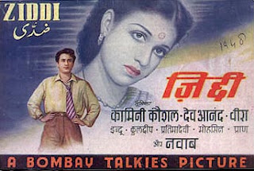

हम जब भी गानों का जिक्र करते हैं तब हमारे ध्यान में अक्सर दो ही बातें होती है, एक तो गायक-गायिका की आवाज और दूसरा संगीत। हम गीतकार यानि गीत के बोलों पर ध्यान उतना ध्यान नहीं देते या अगर दे भी देते हैं तो देते हैं पर चर्चा नहीं करते। जबकि संगीत या गायक-गायिका की आवाज कितनी ही मधुर हो या संगीत कितना ही कर्णप्रिय हो गाना सुनने में आनंद नहीं आता। सौभाग्य से हमारे हिन्दी की पुरानी फिल्मों के गानों में ज्यादातर गीत, संगीत और गायकी तीनों ही पक्ष सुन्दर और प्रभावशाली रहे हैं। 
आज मैं आपको एक ऐसा ही गाना सुनवा रहा हूँ जिसमें संगीत के तीनों ही पक्षों ने गजब का प्रभाव छोड़ा है, या सभी ने इस गाने पर बहुत मेहनत की है।
अगर प्रेम धवन जैसे गुणी गीतकार, लता जी की मधुर गायकी और महान संगीतकार खेम चन्द प्रकाश की त्रिपुटी मिले तो जिस रचना का जन्म होगा तो उसका सहज ही अंदाजा लगाया जा सकता है। खेम चन्द प्रकाश जी के बारे में कुछ कहना सूर्य को दीपक दिखाने के समान होगा, परन्तु फिर भी इतना तो कहना चाहूंगा कि सुजानगढ़ (राजस्थान) के ये ही संगीतकार थे जिन्होने फिल्म महल में संगीत दिया और जिसके गाने आयेगा आने वाला से लता जी को अपार प्रसिद्धी मिली। एक बात और कि वर्ष 2007 स्व. खेम चन्द प्रकाशजी की जन्मशताब्दी का वर्ष है, पता नहीं रेडियो और टीवी के लोगों को इस बारे में पता भी होगा या नहीं!! ( यूनुस भाई सुन रहे हैं ना???
1948 में बनी फिल्म जिद्दी जिसमें देवानंद और कामिनी कौशल की मुख्य भूमिकायें थी और गीत संगीत के बारे में तो आपको उपर बता ही चुके हैं। फिल्म के निर्देशक थे शाहिद लतीफ।

प्रस्तुत गाने में बिरहन नायिका अपने प्रीतम की शिकायत कर रही है और चंदा से कह रही है कि मेरा यह संदेश मेरे प्रियतम को जा कर सुनाओ। हिन्दी फिल्मों में इस थीम पर कई गाने बने हैं इसमें कभी मैना , कभी चंदा तो कभी वर्षा के पहले बादलों के माध्यम से नायिका अपना संदेश भेज रही है। External player or recording not archived. Original media link External player or recording not archived. Original media linkChanda re ja re ja...
चंदा रे जारे जारे
चंदा रे जा रे जारे
पिया से संदेशा मोरा कहियो जा
चंदा रे..
मोरा तुम बिन जिया ना लागे रे पिया
मोहे इक पल चैन ना आये
चंदा रे जारे जारे
किस के मन में जाये बसे हो
हमरे मन में अगन लगाये
हमने तोरी याद में बालम
दीप जलाये दीप बुझाये
फिर भी तेरा मन ना पिघला
हमने कितने नीर बहाये
चंदा,...जारे जारे
चंदा रे जारे जारे
घड़ियाँ गिन गिन दिन बीतत हैं
अंखियों में कट जाये रैना
तोरी आस लिये बैठे हैं
हंसते नैना रोते नैना-२
हमने तोरी राह में प्रीतम
पग पग पे है नैन बिछाये
चंदा,...जारे जारे
चंदा रे जारे जारे
पिया से संदेशा मोरा कहियो जा
मोरा तुम बिन जिया ना लागे रे पिया
मोहे एक पल चैन ना आये
चंदा रे..
Old-Hindi-Songs,Rare-Hindi-Songs,Hindi-Films-Song,Hindi-Film-Sangeet,पुराने-हिन्दी-गाने, हिन्दी-फिल्म-संगीत, Khem Chand Prakash,Prem Dhawan,Lata Mangeshakar,Ziddi,प्रेम धवन